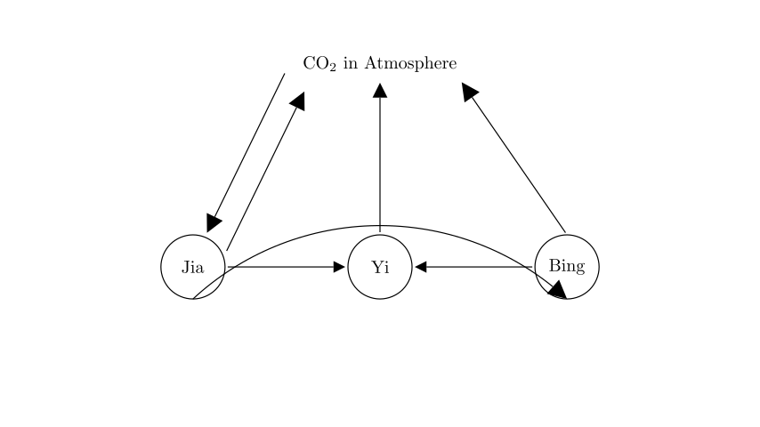
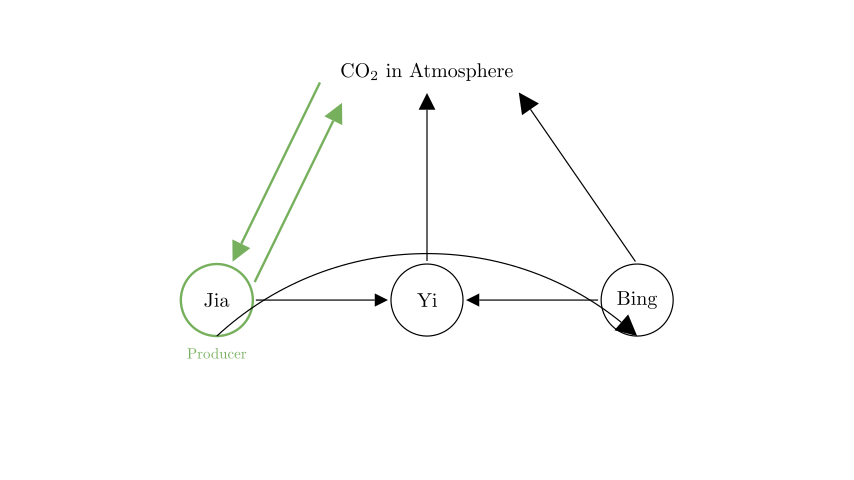
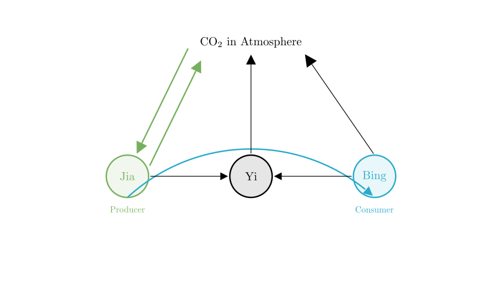
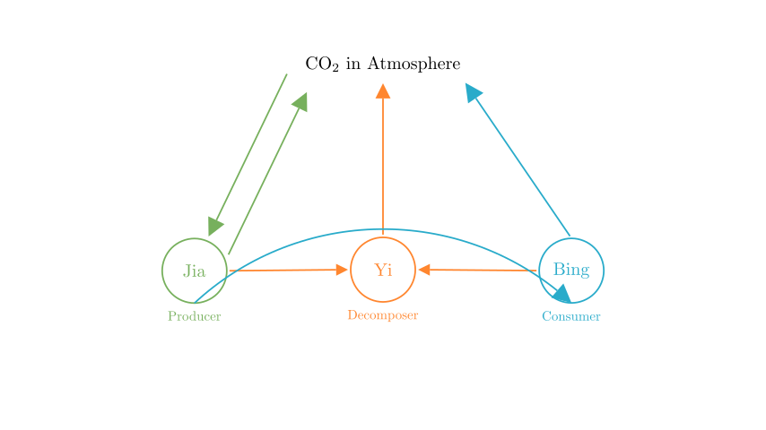

Problem Statement: The figure shows a simplified diagram of the carbon cycle in nature. What do 甲, 乙, and 丙 represent respectively? ( )
A. 甲 is Producer, 乙 is Decomposer, 丙 is Consumer B. 甲 is Consumer, 乙 is Decomposer, 丙 is Producer C. 甲 is Decomposer, 乙 is Producer, 丙 is Consumer D. 甲 is Producer, 乙 is Consumer, 丙 is Decomposer
Solution Approach: To solve this problem, we will analyze the direction of the arrows in the carbon cycle diagram. We need to identify the specific roles (Producer, Consumer, Decomposer) by looking at how carbon enters and leaves each component relative to the atmosphere.

Step 1: Identify the Producer (甲 / Jia)
The most critical clue in a carbon cycle diagram is the connection between the biological components and the atmosphere.
Therefore, 甲 is the Producer.

Step 2: Identify the Consumer (丙 / Bing)
Next, we trace the flow of matter and energy from the Producer.
Therefore, 丙 is the Consumer.

Step 3: Identify the Decomposer (乙 / Yi)
Finally, we look at the component that receives material from all other biological components.
Therefore, 乙 is the Decomposer.

Conclusion and Verification
Let's summarize our findings: - 甲 (Jia): Absorbs CO2 (Photosynthesis) $\rightarrow$ Producer - 丙 (Bing): Feeds on 甲 $\rightarrow$ Consumer - 乙 (Yi): Receives waste from both 甲 and 丙 $\rightarrow$ Decomposer
Comparing this with the given options: - A. 甲 is Producer, 乙 is Decomposer, 丙 is Consumer - B. 甲 is Consumer, 乙 is Decomposer, 丙 is Producer - C. 甲 is Decomposer, 乙 is Producer, 丙 is Consumer - D. 甲 is Producer, 乙 is Consumer, 丙 is Decomposer
Option A matches our analysis perfectly.
Final Answer: The correct option is A.